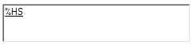
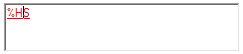
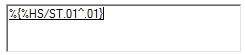
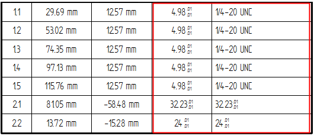

Show hole size tolerance
You can specify stack or limit tolerance to be added to the evaluated hole size or diameter in a hole table.
-
Click the Columns tab in the Hole Table Properties dialog box.
-
In the Columns list, click Size.
You also can click the Diameter/Thread column.
-
In the Property text box, click inside the underlined property text string that extracts hole size or hole diameter from the model.

Note:Underlined property text indicates a string whose value is eligible for formatting. Pink property text indicates a symbol code.
-
When the underlined property text string turns red, click the Format button.

-
In the Format Values dialog box:
-
Click Tolerance.
-
Select the tolerance type (Stack (/ST) or Limit (/LT).
-
In the Upper box, type the value for the upper stack tolerance or the upper limit value.
-
In the Lower box, type the value for the lower stack tolerance or the lower limit value.
-
Click OK.
The hole size property text string on the Columns tab is updated with the modifying property text code.
Example:
-
-
In the Hole Table Properties dialog box, click Apply to update the table.
Example:Stack tolerance is shown on the hole size and diameter values in the last two columns, Size and Diameter/Thread.

How do I
Create a hole tableChange hole table labels
Define a smart hole table callout column
Hide the hole table origin
Learn more
Hole tablesAdding hole table columns
Look up more details
Hole Table commandHole Table command bar
Hole Table Properties dialog box
Options tab (Hole Table Properties dialog box)
Hole Number tab (Hole Table Properties dialog box)
Callout tab
Smart Depth tab
Units tab (Hole Table Properties dialog box)